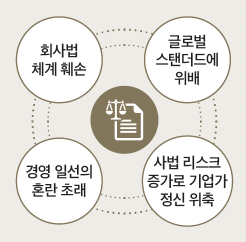

자유시장경제 원칙 흔드는 상법 개정안
이사의 충실의무 확대론
톺아보기
글 권재열 경희대학교 법학전문대학원 교수
22대 국회 개원과 함께 재발의된 상법 개정안
현행 상법은 이사에게 법령과 정관의 규정에 따라 회사를 위하여 그 직무를 충실하게 수행하도록 하는 충실의무를 부여하고 있다(제382조의 3). 2022년 3월 당시 더불어민주당의 이용우 의원은 “물적분할 등과 같은 자본거래 과정에서 이사의 행위가 회사에는 아무런 영향이 없으나 단지 주주 사이에서 부의 이전의 결과만 가져오는 경우 이로 인해 특정 주주에게 피해가 발생하더라도 이사의 임무해태가 아니어서 이사는 어떠한 책임도 지지 않는 바, 이와 같이 기업가치는 변화가 없거나 심지어 증가하지만 일반 주주의 가치가 저하되는 경우 지배주주와 일반 주주 사이의 이해 상충 문제를 해소하기” 위해 이사에게 주주에 대한 보호 의무를 부과하는 것을 내용으로 하는 상법 제382조의 3 개정안을 대표발의했다.
동 개정안은 “이사는 법령과 정관의 규정에 따라 주주의 비례적 이익과 회사를 위하여 그 직무를 충실하게 수행하여야 한다”고 규정함으로써 결과적으로 이사의 충실의무의 대상을 현행 상법이 정한 회사에 한정하지 않고 주주의 비례적 이익까지로 확대할 것을 요구하는 것이 핵심이었다. 이 법안은 제21대 국회가 종료됨에 따라 자동폐기되었으나, 제22대 국회가 개원하면서 더불어민주당의 정준호 의원이 이 법안을 재발의해 국회에 제출된 상황이다. 이 개정안의 취지가 명백하고 나름대로 의미가 있기는 하지만 아래에서 살피는 것처럼 기존 법체계와 정합성을 확보하기 곤란하다는 점에서 많은 비판을 받고 있다.
신·구 조문 대비표
현행
제382조의 3(이사의 충실의무) 이사는 법령과 정관의 규정에 따라 회사를 위하여 그 직무를 충실하게 수행하여야 한다.
개정안
제382조의 3(이사의 충실의무) 이사는 법령과 정관의 규정에 따라 주주의 비례적 이익과 회사를 위하여 그 직무를 충실하게 수행하여야 한다.
상법 제382조의 3과의 부조화
우리 정부는 1997년 12월 외환위기로 국가부도라는 미증유의 위기에 처하면서 IMF로부터 구제금융을 받았다. 이러한 국가적 경제 위기를 극복하기 위해 다양한 방법으로 국민들의 역량이 집결된 바 있다. 이 같은 시대적 배경하에 상법 제382조의 3은 기업 경영의 투명성을 제고하고 주식회사의 지배 구조 혁신을 도모하는 차원에서 이사의 책임을 강화하는 것을 주된 목적으로 신설되었다.
상법 제382조의 3은 기본적으로 ‘회사’와 ‘이사’ 사이의 이익충돌(conflict of interests)을 방지하기 위한 규정이다. 예컨대 이사가 지나치게 과다한 보수를 책정하고 영향력을 행사해 주주총회 승인을 받은 후 회사가 이사에게 그 보수를 지급했다면 회사와 이사의 이익이 상호 충돌되며, 이 경우 상법 제382조의 3이 적용된다. 개정안은 이사가 주주의 비례적 이익을 위해 충실의무를 부담한다고 정하는 것은 ‘주주와 이사’ 사이에 이익충돌 상황이 있는 것을 전제로 한다. 그러나 이사는 주주에 대해 직접적인 계약관계에 있지 않기 때문에 현실적으로 주주와 이사 간의 이익충돌이 발생하는 경우를 상정하기 어렵다. 따라서 주주에 대한 이사의 충실의무를 상법 제382조의 3이 정한 회사와 이사 간의 이익충돌의 범주 내에 포섭하는 것은 무리다.
이사는 회사의 대리인
이사는 회사를 위해 업무를 수행하는 대리인이다. 회사는 이사가 의무를 열심히 수행했는지를 평가하고, 성실히 업무를 집행한 이사에게 회사 명의로 회사 통장에서 보수를 지급한다. 만약 이사가 직접적으로 주주를 위해 의무를 다해야 한다면 그는 어쩔 수 없이 주주의 대리인이 되어야 하는데, 이는 너무나 파격적이어서 법률파괴적인 수준이다. 주주가 이사의 의무이행 여부를 평가할 능력이 있는지를 차치하더라도, 자신의 이름으로 자신의 통장에서 이사에게 보수를 지급하려는 주주가 몇 명이나 될지 의문이다.
이에 대해 주주는 회사의 소유자이므로 회사 통장에서 돈을 꺼내 이사의 보수를 지급하게 한다면 주주가 이사에게 보수를 지급하는 것과 다를 바 없다고 반박할 분도 있을 것이다. 그러나 상법에는 주주가 회사의 소유자라는 명문의 규정이 없다. 주주는 회사의 설립과 운영을 위해 종잣돈을 출연한 것밖에 없다. 진정 주주가 회사의 주인이라면 그는 어느 때라도 회사로부터 출연금을 되돌려 받을 수 있어야 할 것이지만 현행 상법에서는 허용되지 않는다. 또한 회사 재산이 무단 침범되더라도 주주가 행사할 수 있는 권한이 없다. 주주는 종잣돈을 출연한 것을 증명하는 주식의 소유자에 지나지 않는다. 대법원 판례도 주식회사의 주주는 주식 소유자로서 회사의 경영에 이해관계를 가지고 있지만, 회사의 재산관계에 대해서는 단순히 사실상·경제상 또는 일반적·추상적인 이해관계일 뿐 구체적 또는 법률상의 이해관계를 가지 못한다는 것을 분명히 하고 있다.
따라서 상법 개정안이 주주의 비례적 이익과 회사를 동일한 가치를 지닌 것으로 보아 병렬적으로 열거한 것에 대해 납득할 수 없으며, 더 나아가 이 같은 개정안은 회사의 법인성을 경시함은 물론이고 대리인인 이사가 본인인 회사 이외의 자에게 충실의무를 부담하는 것에 공감하기 어렵다. 이사가 계약의 직접 상대방인 회사가 아닌 주주를 위해 의무를 다하는 것에 대해 회사에 보수를 지급한다면 이는 배임죄로 처벌받을 우려도 있다.
주식회사는 주주와 독립된 별개의 권리주체인 것이다. 이사가 회사 재산에 대해 법률상의 이해관계가 없는 주주에게까지 충실의무를 부담하라는 것은 터무니없는 강요에 지나지 않는다.
만장일치제의 비효율성
경영권 분쟁이 있는 상황을 전제로 두 가지 경우를 가정하기로 한다. 먼저 회사가 경영권 방어를 위해 자기주식을 제3자에게 처분해 성공적으로 경영권을 유지한 경우가 있다고 하자. 회사가 경영권을 방어한 결과 분쟁이 종식되어 주가가 하락했다고 하더라도 지배주주는 경영권을 방어했다는 점에서 만족할 것이지만 오히려 소수주주는 주가 하락으로 자신의 이익이 침해되었다고 생각할 여지가 있다. 반대로 경영권 분쟁을 이유로 주가가 상승한 상황에서 이사가 소수주주의 이익을 보호하기 위해 경영권 방어를 하지 않았다면 대주주의 이익은 증발하는 것이다.
만장일치제는 회의체가 채용할 수 있는 가장 기초적인 의사결정의 준칙이다. 그러나 이 준칙은 구성원 전원의 뜻이 통일되어야만 행동할 수 있다는 점에서 근본적으로 위험회피적 속성을 지니고 있다. 이사의 충실의무를 확장해 주주의 비례적 이익을 보호하자는 것은 만장일치제를 하자는 것과 다를 바 없다. 100명의 주주를 둔 어느 회사에서 99명이 특정한 의안에 찬성의 의사를 가지고 있지만 나머지 1인의 주주가 그 의안에 찬성하지 않는다면 이사는 어떻게 행동을 해야 하는가? 만약 이사가 99명의 의사대로 찬성 결정을 할 경우 반대한 1인으로부터 자신의 비례적 이익이 보호되지 못했다는 이유로 책임을 추궁받게 될 것이며, 거꾸로 1인의 주주가 원하는 바에 따라 결정을 하면 99명이 이사의 책임을 묻는 교착상태에 빠지게 된다. 이사는 의무불이행으로 인해 매일 동네북처럼 소송에 시달리게 될 것이며, 배임죄 혐의로 법원에 들락날락해야 할 것이다. 이처럼 모든 주주의 뜻이 하나로 통일되지 않는 한 이사는 의사결정을 할 수 없는 상황에 놓이게 되는 것이다. 이사회에 올라오는 의안이 매번 모든 주주의 의사가 일치될 수는 없다는 현실을 감안하면 회사 운영이 제대로 될 수 없는 것이 자명해진다. 이 같은 극단적인 상황에서 회사가 유능한 이사를 유치하려면 어마어마한 규모의 임원배상책임보험을 들 수밖에 없다. 회사가 보험회사에 지불하는 배상책임보험료는 궁극적으로 제품 가격에 전가될 것이어서 우리 상품의 국제적 경쟁력이 떨어지게 될 것이다.
상법 개정안에 대한 우려사항
상법 개정안의 모순
장기투자를 원하는 대주주와 단기 투자를 원하는 소수주주가 있다고 할 때 각 입장이 나름대로의 정당성을 가지고 있어 어느 한쪽을 무조건 나무랄 수 없다. 이처럼 대주주와 소수주주의 의견이 다르다면 이사는 누구를 섬겨야 하는가? 중국 역사가인 사마천(司馬遷)의 『사기열전』에 따르면 연나라가 제나라로 쳐들어갔을 때 왕촉(王蠋)에게 연나라 쪽으로 투항하기를 권유했으나 그는 “충신은 두 임금을 섬기지 않는다”면서 스스로 목숨을 끊었다고 한다. 개정안처럼 모든 주주를 골고루 섬기라는 이사의 충실의무 규정하에서 이사는 절대로 충신이 될 수 없음이 명백하다. 오히려 이사는 소송의 나락으로 떨어질지를 늘 걱정해야 하는 팔자로 전락하게 될 것이다. 이런 상황에서 누가 혁신적인 경영활동을 하겠다고 선뜻 나설 것인가? 이 때문에 주주의 비례적 이익을 위한 이사의 충실의무를 정하는 개정안을 수용할 수 없다.